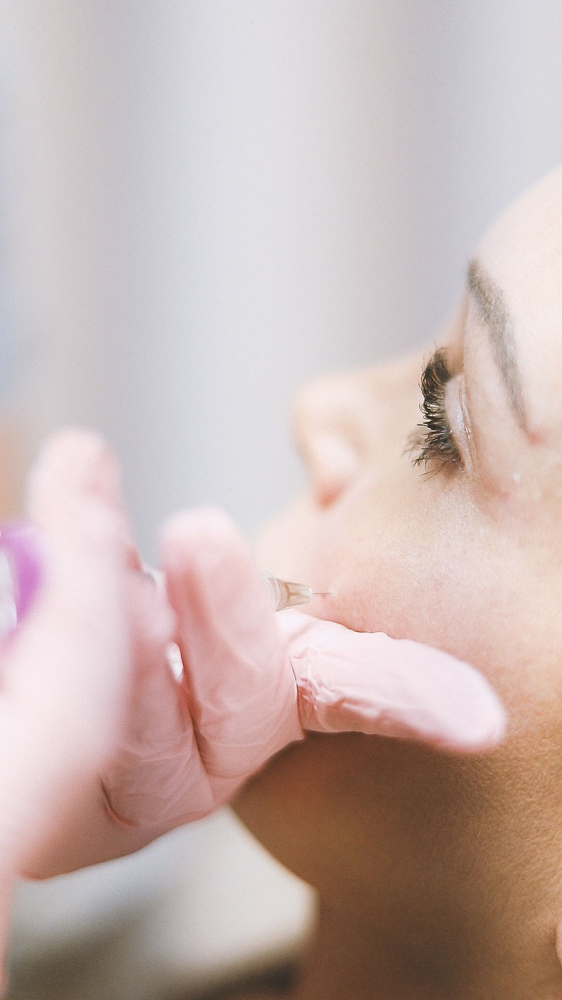

Rejuvenescimento & Facial
Preenchimento Labial
Descrição
O preenchimento labial é um procedimento com ácido hialurônico que devolve volume, hidratação e definição aos lábios, com resultado natural que respeita a anatomia e as proporções do seu sorriso.
Principais benefícios
- Volume e definição com resultado natural
- Hidratação adicional para os lábios
- Correção de pequenas assimetrias
- Procedimento reversível e de rápida recuperação
Para quem é indicado
Indicado para quem deseja lábios mais definidos ou volumosos, corrigir pequenas assimetrias ou apenas realçar o contorno labial de forma sutil, sem alterar drasticamente as feições.
Como funciona
- Avaliação da anatomia labial e do sorriso
- Planejamento do volume e contorno desejados
- Aplicação com técnica precisa e produtos de procedência certificada
- Orientações de cuidados pós-procedimento
- Retorno de acompanhamento, quando indicado
Os resultados podem variar de pessoa para pessoa. Este conteúdo tem caráter informativo e não substitui uma avaliação clínica individual.
Perguntas frequentes
Fica inchado depois do procedimento?
É comum um leve inchaço nas primeiras 24 a 48 horas, que tende a diminuir naturalmente nos dias seguintes.
Quanto tempo dura o resultado?
O tempo de duração varia de pessoa para pessoa e é reavaliado individualmente a cada retorno.
Posso escolher o volume desejado?
Sim. O volume é sempre definido em conjunto com você durante a avaliação, respeitando a anatomia e a proporção do seu sorriso.
Sua jornada estética começa com uma conversa.
Agende sua avaliação e conheça o protocolo pensado especialmente para você.
Falar com a Maison